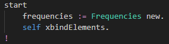
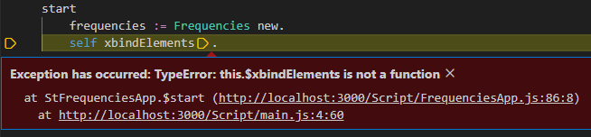
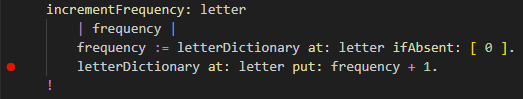
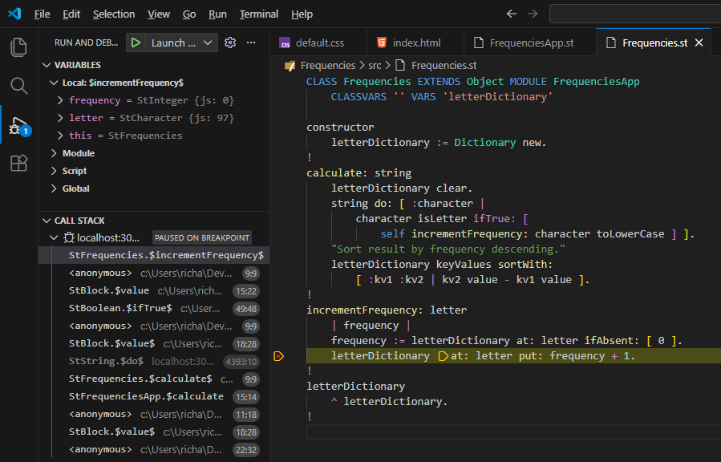
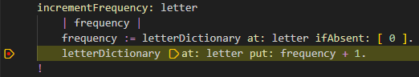
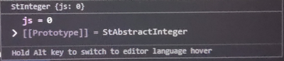
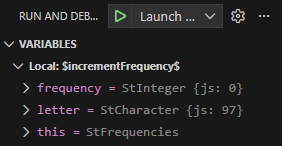
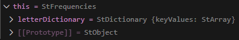
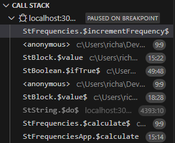

Debugging
Maybe the started app encountered a runtime error.
Then it will break into the VSCode debugger
because in the "BREAKPOINTS" section, we checked "Uncaught Execeptions" earlier.
To illustrate this, lets intentionally intoduce an runtime error
by putting an x before the method call to bindElements :
in the method start in the file ./src/FrequencyApp.st .

Now stop the app (close the browser) and restart it from VSCode with [F5].
Now VSCode should break into the debugger with a screen part looking like this:

You can see that the error describes compiled JS function names in generated JS files.
(This can actually be useful for low-level debuging, but that's not needed often).
But through the magic of Source Maps, is shows ST source code at the right location.
Before proceeding, first undo the error by removing the x from the method call to xbindElements
Breakpoints
You can also set breakpoints on ST method calls,
to inspect the value of variables as that moment,
and step over, into and out of following method calls.
Just like when developing in JS or TS in VSCode.
In VSCode, open the file ./src/Frequencies.st .
In the method incrementFrequency set a breakpoint on the last line of code,
by clicking in the leftmost margin of the source file window pane.
A red dot should appear indicating the breakpoint has been set:

Now stop the app (close the browser) and restart it again from VSCode with [F5].
Type the input the string abb and press the [Calculate] button.
Now VSCode should break on our breakpoint with a screen part looking like this:

There's a lot going on here, we'll break it down.
Source
In the source pane you can see the debugger has stopped at the desired line:

You can inspect local variables by hovering your mouse above them.
Try moving the mouse over the variable frequency and this window should pop up:

Variables
In the "VARIABLES" pane you can see local variables shown automatically:

JS variable this contains the ST variable self .
You can expand variables containing composed objects by clicking on the right-arrow: >
Try that for the variable this and it should look like this:

Call stack
In the "CALL STACK" pane you can see function call stack upto the current breakpoint:

You can click on functions further down the stack
to show their source code and inspect their variables.
ST function names are a bit 'mangled' with dollar signs to prevent name clashes,
but they should be redable well enough.
Its also possible to click on JS functions in the stack and inspect them.
Stepping
You can use the normal VSCode stepping keys to 'walk' htrough the code:
[F10] = Step over. [F11] = Step into. [Shift]+[F11] = Step out. [F5] = Continue.
Limitations
Debugging in SmallJS with Source Maps currently has these limitations:
- Breakpoints can only be set on ST method calls.
- ST assignments cannot have a breakpoints, e.g.:
var := 7 .
- Its not possible to set a breakpoint within a ST block, e.g.:
var ifTrue: [ ... ] .
- Debugging assignments.
- Debugging in blocks.
So its a bit of a compromise also showing some JS until a full "Language Server" for SmallJS is made.
Now that our code is working, lets add some tests to keep it that way...